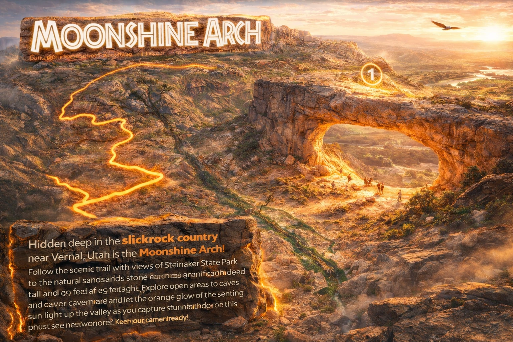

Moab doesn't have a monopoly on Utah arches, red rock, or off-road thrills. Vernal's backcountry delivers the same adventure DNA — with trails you'll have to yourself, temperatures you can actually enjoy, and prices that won't ruin your trip.
We love Moab — Arches and Canyonlands are bucket-list destinations. But during peak season (April through October), the sheer volume of visitors changes the experience. Here's what the numbers look like when you go off the beaten path to Vernal instead.

Everyone knows Arches National Park. But tucked deep in Vernal's backcountry is Moonshine Arch — a stunning natural sandstone formation that rivals anything in southern Utah. The difference? No park entrance fee, no timed entry permit, no shuttle bus, and no crowds.
Moonshine Arch is just one of five guided trail tours offered by Adventure Tours Vernal. Each trail reveals a different side of the Uintah Basin — from river corridors to canyon walls to ridge-top panoramas.
Explore All 5 Trails →Vernal sits 1,300 feet higher than Moab. That elevation difference means meaningfully cooler temperatures during the months when most people visit — and once you're out on the trails, it gets even better. Many of our trails climb into canyon country where temps regularly stay below 70°F, even on summer afternoons.
Every trail is guided by Dave Wilson aboard Kawasaki KRX 1000 side-by-sides — built for power, comfort, and safety.
Sandy washes, open desert, and Green River corridor views. A favorite for first-timers and families.
Red rock canyons leading to a hidden natural sandstone arch deep in the backcountry.
Towering sandstone walls and a winding river valley — one of the Uintah Basin's most dramatic rides.
Butch Cassidy's escape route through canyon country and high desert plateaus.
360° views of Dinosaur Country and the Uintah Mountains from the ridge top.
Mention "Adventure Tours" when you book your room. Comfortable, affordable, and right in town — the perfect basecamp for your Vernal adventure.
Five trails, expert guides, and the kind of open-sky silence that Moab used to have. From $299 per vehicle — book today.